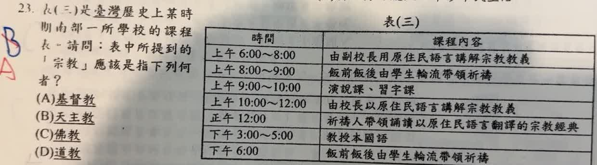

分享原卷｜第 23 題
完整原題
| 時間 | 課程內容 |
|---|---|
| 上午6:00～8:00 | 由副校長用原住民語言講解宗教教義 |
| 上午8:00～9:00 | 飯前飯後由學生輪流帶領祈禱 |
| 上午9:00～10:00 | 演說課、習字課 |
| 上午10:00～12:00 | 由校長以原住民語言講解宗教教義 |
| 正午12:00 | 祈禱人帶領誦讀以原住民語言翻譯的宗教經典 |
| 下午3:00～5:00 | 教授本國語 |
| 下午6:00 | 飯前飯後由學生輪流帶領祈禱 |
表(三)是臺灣歷史上某時期南部一所學校的課程表。請問：表中所提到的「宗教」應該是指下列何者？
(A) 基督教
(B) 天主教
(C) 佛教
(D) 道教
先想一想，再查看答案、解說與原圖
原卷作答：原卷藍筆B，紅筆訂為A
正確答案：A。課表呈現南部原住民族語教義、宗教經典、祈禱及語文教育，符合荷蘭時期基督新教學校情境。
逐項解析
| 選項與原句 | 判讀 | 句意與判斷理由 |
|---|---|---|
| (A) 基督教 | 應選 | 課表呈現南部原住民族語教義、宗教經典、祈禱及語文教育，符合荷蘭時期基督新教學校情境。 |
| (B) 天主教 | 不選 | 國中史常將西班牙在北臺灣的天主教，與荷蘭南部的新教教育區分。 |
| (C) 佛教 | 不選 | 佛教與這套荷治教會學校課程情境不符。 |
| (D) 道教 | 不選 | 道教也不是本題所指以原住民族語教義與經典推行的學校教育。 |
詳細說明與解題步驟
題目先指定南部學校，再提供用原住民族語講解教義、翻譯宗教經典、祈禱及學習語文的課表。這組材料符合荷蘭時期在南部原住民族社群設教會學校、推行基督新教教育的情境，選A。
國中題目常以「基督教」指基督新教，並將它與「天主教」分列比較；兩者都屬廣義基督宗教，不是全然無關的宗教。
原AI答案A雖然正確，卻把這張南部課表直接說成清領後期馬偕在北臺灣的學校，材料並沒有提供這項依據。本頁改按荷治南部教會教育說明，不因出現祈禱就指定馬偕。
核對依據：國立臺灣圖書館〈荷蘭時期的教育政策〉與國立臺灣歷史博物館〈清代以前的女子教育〉。
核對註記：已核對題幹、全部選項與必要材料；教材對應課次未確認，歸綜合。
原圖（僅本題）
